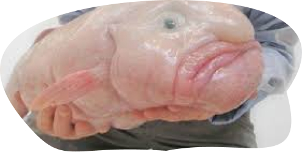

1-Рыба-капля
Рыба-капля (Psychrolutes marcidus) — розовая рыба длиной в фут, обитающая в глубоких водах у берегов Австралии и Новой Зеландии. У него мягкие кости и мало мышц, и у него нет плавательного пузыря, наполненного газом внутреннего органа, который позволяет большинству костистых рыб контролировать свою способность оставаться на плаву в воде.
Насколько большими становятся рыбы-капли?
Место обитания: Глубоководные воды Местонахождение: Тихий, Атлантический и Индийский океаны. Побережья Австралии, Тасмании, Новой Зеландии Продолжительность жизни: 130 лет Размер: 30 см (12 дюймов) Вес: 20 фунтов (9 кг) Цвет: розоватый Диета: морские ежи, моллюски, моллюски, крабы, омары, микроскопические бактерии, морские перья. Хищники: Люди Максимальная скорость: 5 миль/ч (10 км/ч) Нет. видов: 1 Статус консервации: Не думал, что ему угрожают
Вас кусает рыба-капля?
К счастью, рыба-капля представляет небольшую угрозу для человека. Мало того, что у него нет зубов, чтобы кусать, мало кто из людей когда-либо вступал в контакт с живым экземпляром.

Рыбы-капли издают звуки?
В конце концов, рыба-капля состоит больше из воды, чем из мышц. По словам Марты Болган, морского биолога из Льежского университета в Бельгии, исследователи наблюдали звуковые мышцы или записали звуки пяти семейств глубоководных рыб, в том числе макрурусов и угольных рыб.

2-Акула-гоблин
Несмотря на то, что в игровом мире акула-гоблин очень быстрая и агрессивная, в реальном мире она передвигается медленно и плохо плавает с плохим зрением. Акулы-гоблины питаются крупной и мелкой рыбой вместе с другими акулами и скатами, но не представляют опасности для человека.
Насколько велика акула-гоблин?
У них длинный выступающий шип на лбу, торчащие зубы и удлиненный хвост, похожий на хвост акул-молотильщиков (род Alopias), к которым они также относятся. Были зарегистрированы длины 3,4 метра (11 футов).V

Сколько зубов у акулы-гоблина?
Акула-гоблин — один из немногих видов акул, чьи зубы видны, когда рот полностью закрыт. Верхняя челюсть имеет от 35 до 53 длинных узких игольчатых зубов, а нижняя — от 31 до 62 зубов с тремя рядами передних зубов на каждой стороне обеих челюстей.

Акулы-гоблины агрессивны?
Несмотря на то, что в игровом мире акула-гоблин очень быстрая и агрессивная, в реальном мире она передвигается медленно и плохо плавает с плохим зрением. Акулы-гоблины питаются крупной и мелкой рыбой вместе с другими акулами и скатами, но не представляют опасности для человека.

3-Акула-призрак
Эти существа на самом деле являются химерами — хрящевыми рыбами, которые связаны с акулами, но отличаются несколькими отличиями, в том числе наличием только одной жабры с каждой стороны тела. Обитатели глубоких вод, химеры могут вырасти более чем на шесть футов в длину в зависимости от вида.
Насколько велика акула-призрак?
Акулы-призраки могут вырастать до 150 см (4,9 фута) в длину и жить до 30 лет. Ученые находили образцы странного с 1960-х годов.

Есть ли у призрачной акулы зубы?
В отличие от настоящих акул, у которых есть ряды сменных острых зубов, предназначенных для измельчения и разрывания, акула-призрак имеет минерализованные зубные пластины. Они используют эти зубы, чтобы раздавить моллюсков и червей, что составляет интересную диету.

Опасны ли акулы-призраки?
Акулы-призраки имеют длинный позвоночник, расположенный прямо перед первым спинным плавником, и он используется для защиты от потенциальных хищников. Люди должны соблюдать осторожность при обращении с этой рыбой, чтобы избежать травм.

4- Ай-ай
У ай-ай грубый лохматый черный мех с мантией из длинных остевых волос с белыми кончиками. У них круглая голова, большие треугольные уши, желто-оранжевые глаза и розовый нос. У них длинные пальцы с длинными изогнутыми когтями, за исключением больших пальцев. У ай-ай есть характерный удлиненный средний палец с более длинным когтем
Насколько велики да да получить?
Длина: 40 см (взрослая особь) Масса: 2,3 кг (взрослая особь)

Ай-ай ядовит?
На первый взгляд это ночное млекопитающее с его большими карими глазами и мордочкой плюшевого мишки кажется милым и приятным, но у него смертельный укус, который может вызвать лихорадку, боль и отек.

Сколько живут ай-ай?
У хвоста ай-ай самые длинные волосы среди полуобезьян (группа, в которую входят лори, кустарниковые детеныши, лемуры и долгопяты) длиной более 9 дюймов. Ай-ай может прожить в неволе более 20 лет.

5-Аксолотль
Аксолотли также известны как мексиканские ходячие рыбы. Их название происходит от ацтекского слова, означающего водяную собаку или водяного монстра. У аксолотлей цилиндрическое тело, короткие ноги, относительно длинный хвост и перистые наружные жабры. У них четыре пальца на передних лапах, пять пальцев на задних и подвижные веки.
Насколько большими могут быть аксолотли?
У аксолотлей отчетливые перистые жабры. Детское лицо. Аксолотль может достигать 18 дюймов в длину, но в настоящее время вырастает примерно до 9 дюймов. Аксолотли темного цвета с зеленоватыми крапинками; у некоторых могут быть серебристые блики на коже.Взрослые аксолотли достигают веса около 12 дюймов (30 см) в корпусе от носа до кончика хвоста и могут весить до 10,5 унций (300 г).

Есть ли у аксолотлей зубы?
Их зубы расположены в верхней и нижней челюстях и предназначены только для захвата пищи. Они вообще не используют свои зубы для жевания, и они определенно не используют их в качестве какой-либо защиты. Не позволяйте этому отпугнуть вас от ручного кормления аксолотлей.

Можно ли трогать аксолотля?
While axolotls are relatively hardy to slight fluctuations in their environment, they also have delicate, soft bodies with permeable skin. In fact, most of their body is made of cartilage rather than bone. That means they should not be handled unless absolutely necessary.

6-Утконос
Тело утконоса покрыто густым темно-коричневым мехом, плоское и обтекаемое. У него широкий плоский хвост с короткими крепкими ногами и перепончатыми передними лапами, которые хорошо подходят для жизни в воде. Хвост действует как стабилизатор, когда утконос плавает, а также используется для рытья нор.
6-Утконос
>The platypus's body is covered in thick, dark brown fur and is flat and streamlined. It has a broad, flat tail with short, stout legs and webbed front feet well suited to its life in the water. The tail acts as a stabiliser when the platypus swims, and is also used for burrowing Насколько велик взрослый утконос? Утконосы имеют длину от 38 до 60 см (от 15 до 24 дюймов); самцы обычно крупнее самок. Водные приспособления включают плоское обтекаемое тело, расположенные на спине глаза и ноздри, а также плотный водонепроницаемый мех, который обеспечивает хорошую изоляцию утконоса. Утконосы светятся? Утконосы светятся из-за того, что называется биофлуоресценцией. Биофлуоресценция — это когда живой организм поглощает короткие волны света — от солнца или другого источника света — и переизлучает их в виде более длинных волн света. Может ли утконос укусить вас? Утконосы не нападают на людей. У них нет зубов, которые могли бы помочь им укусить, и единственная форма защиты, которая у них есть, — это заостренная шпора на пятке. Однако, если с утконосами обращаться в дикой природе, они могут уколоть вас своей шпорой и ввести яд.

Утконосы светятся?
Утконосы светятся из-за того, что называется биофлуоресценцией. Биофлуоресценция — это когда живой организм поглощает короткие волны света — от солнца или другого источника света — и переизлучает их в виде более длинных волн света.

Может ли утконос укусить вас?
Утконосы не нападают на людей. У них нет зубов, которые могли бы помочь им укусить, и единственная форма защиты, которая у них есть, — это заостренная шпора на пятке. Однако, если с утконосами обращаться в дикой природе, они могут уколоть вас своей шпорой и ввести яд.